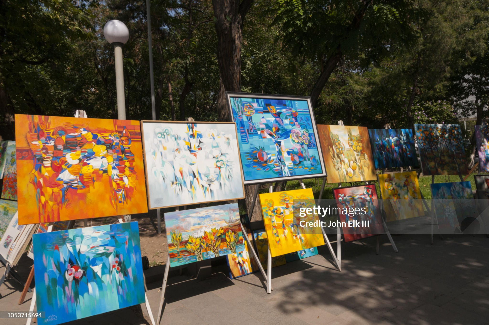
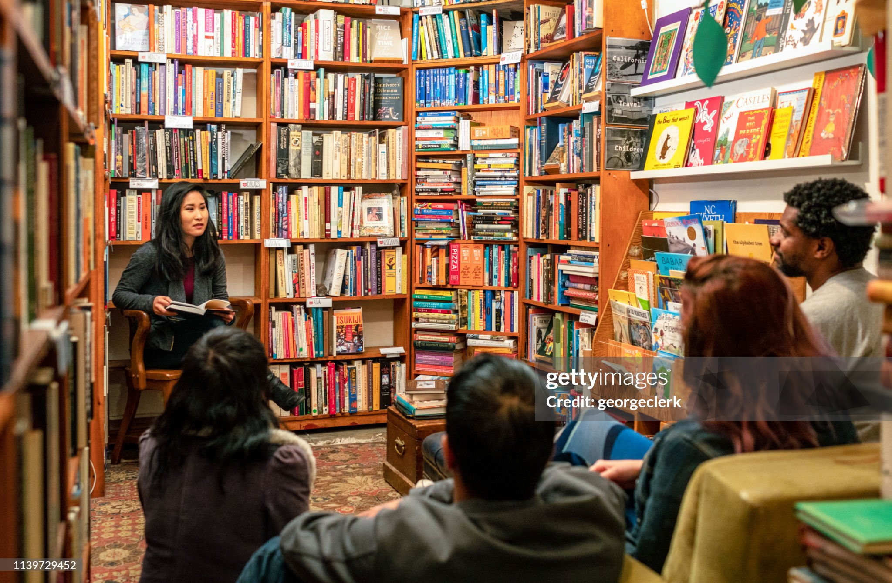
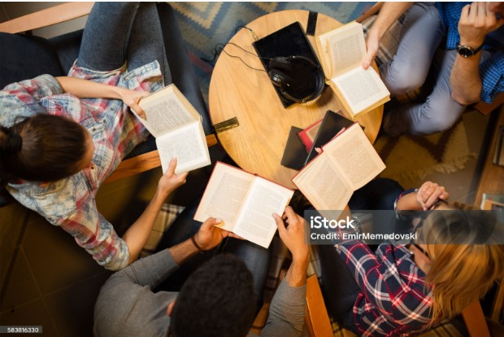
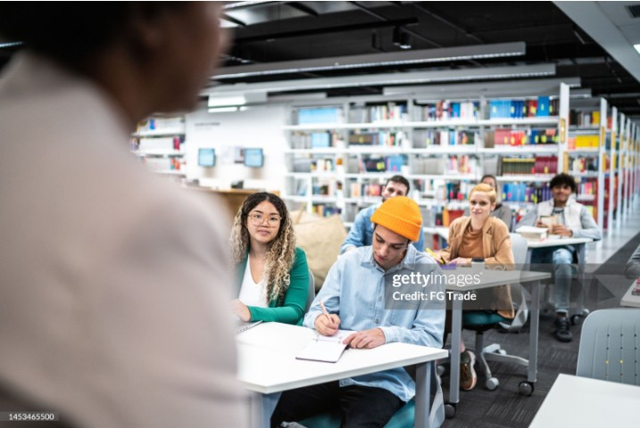

Notícias e Eventos
Confira as notícias e eventos da biblioteca

Biblioteca Vozes celebra a arte local com nova exposição coletiva
A Biblioteca Pública Vozes abre suas portas, a partir da próxima semana, para uma celebração imperdível da cultura candanga.
O espaço cultural sediará a exposição coletiva "Eco das Cores",
que reúne obras de mais de 15 artistas plásticos, fotógrafos e escultores atuantes no Distrito Federal.
A mostra tem como objetivo dar visibilidade à nova cena artística da capital, promovendo um diálogo entre a literatura e as artes visuais.
Entre telas abstratas que remetem ao famoso céu de Brasília e esculturas que utilizam materiais reciclados,
a exposição promete transformar o ambiente de leitura em uma galeria viva.
"A Biblioteca Vozes sempre foi um espaço para ecoar as identidades da nossa cidade.
Trazer esses artistas locais para cá é reafirmar que a nossa comunidade pulsa arte e criatividade",
destaca Clarice Ramos, diretora do espaço.
A exposição "Eco das Cores" acontece de 12 a 30 de julho na parte externa da Biblioteca Pública Vozes, localizada no Guará 1.
A visitação tem entrada gratuita e a classificação indicativa é livre para todos os públicos.

Encontro com a Autora Clara Mendes é sucesso na Biblioteca Pública Vozes
Na tarde do último sábado, a Biblioteca Pública Vozes foi palco de um encontro emocionante entre leitores e a escritora Clara Mendes, consagrada por seus romances de ficção contemporânea.
O evento, que marcou o encerramento do ciclo "Narrativas Urbanas", reuniu a comunidade no espaço da instituição para prestigiar a autora.
Durante quase duas horas, a autora compartilhou os bastidores de seu processo criativo,
detalhou a construção de suas personagens mais famosas e debateu a importância de espaços comunitários para o incentivo à leitura.
"Estar na Biblioteca Vozes hoje tem um significado especial. Este nome não é por acaso; bibliotecas públicas são os lugares onde as vozes da periferia,
dos jovens e dos grandes clássicos se encontram e ganham eco", declarou Clara, sob aplausos calorosos do público.
O próximo encontro literário da biblioteca já está agendado para o início do próximo mês e trará novos nomes da poesia local.

O Clube do Livro da Biblioteca Vozes é um espaço aberto a todos que desejam compartilhar os prazeres da leitura.
A cada quinze dias,
escolhemos uma obra para ler e debater em encontros dinâmicos e acolhedores.
Próximo evento: 15/07/2026
Horário: 16h - 18h

Por meio de dinâmicas, leitura de referências e exercícios guiados, você vai aprender técnicas para estruturar ideias e criar narrativas envolventes. Atividade gratuita, mediante a inscrição no balcão da biblioteca.
Próximo evento: 16/07/2026
Horário: 14h - 16h

Criada para despertar o gosto pela leitura desde a infância, a atividade transforma narrativas em experiências interativas e inesquecíveis para toda a família.
Próximo evento: 17/07/2026
Horário: 14h - 16h